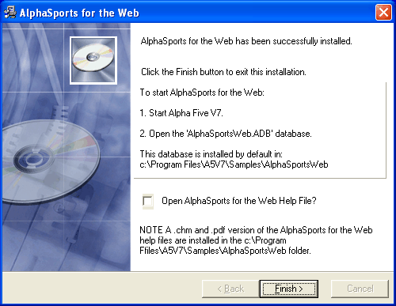
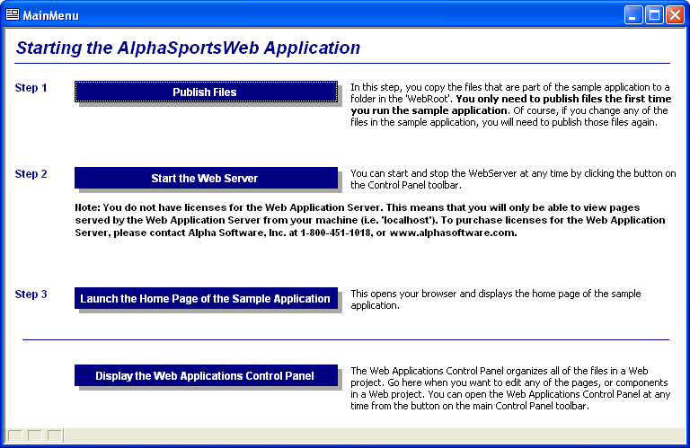

Installation
The AlphaSportsWeb sample database is an optional upgrade to the AlphaSports sample database that ships with Alpha Anywhere. We created AlphaSportsWeb to illustrate how to use Alpha Anywhere web publishing to build an on-line e-commerce application. We expect that developers will use it as a starting point or as reference code when building their own applications.
 Note : AlphaSportsWeb
includes sample code for identifying invalid credit card numbers, for
using Authorize.Net to validate credit cards,
and for using PayPal for accepting electronic
payments. This is sample code only and is not warranteed for commercial
use. You should also consult Authorize.Net and PayPal for their latest product specifications
and for guides to using features that AlphaSportsWeb
has not demonstrated.
Note : AlphaSportsWeb
includes sample code for identifying invalid credit card numbers, for
using Authorize.Net to validate credit cards,
and for using PayPal for accepting electronic
payments. This is sample code only and is not warranteed for commercial
use. You should also consult Authorize.Net and PayPal for their latest product specifications
and for guides to using features that AlphaSportsWeb
has not demonstrated.
To install AlphaSportsWeb :
Run AlphaSportsWeb.EXE and click Next >.
Enter your license code and click Next >. to display the following dialog.

Optionally, check Open AlphaSports for the Web Help File.
Click Finish.
Start Alpha Anywhere.
Open AlphaSportsWeb. You will find it in the \Samples\AlphaSportsWeb folder under you Alpha Anywhere program directory.
Click the "AlphaSportsWeb" menu entry to display the following dialog.

Click Publish Files. This places a working copy of the application on your local webroot. This means that you can immediately start investigating the features and techniques of the application. Later, you can publish these files from the Web Projects Control Panel .
Click Start the Web Server. Later, you can start and stop this local copy of the Application Server from the Web Projects Control Panel.
Click Launch the Home Page of the Sample Application. This will display the first page that a customer would see when he visits this site.
Click Display the Web Applications Control Panel. This will display the pages, components, images, and other files that are the source materials for AlphaSportsWeb.
The remainder of this document explains the techniques that the Alpha Five developers used when creating AlphaSportsWeb. You can always find a copy of these help files at http://support.alphasoftware.com/alphafivehelp/index.htm.
See Also